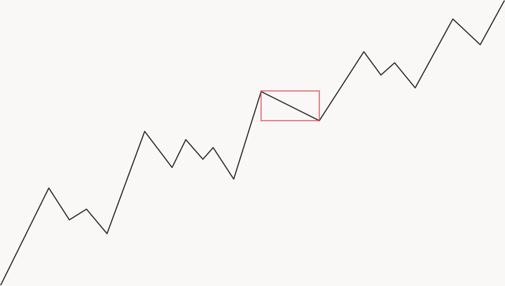
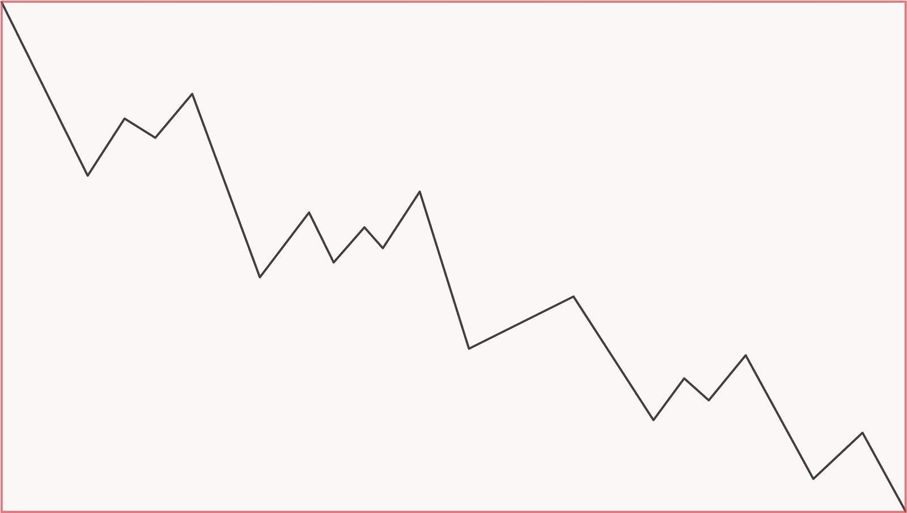

wave window
how are you really doing?
one week i'm on top of the world,
waking up with hope,
feeling strong.
the next?
my alarm's the drill sergeant of hell,
a full day of misery ahead,
kill me.
i was stuck in a cycle:
make progress → lose all faith → recover → repeat
it was so draining, i made less progress each cycle.
thank god i learned to surf.
waves
life is constant change, constant motion.
life is energy — and energy moves in waves.
waves in progress
when we progress in something we measure values and try to change them.
- improve your sleep by increasing hours asleep.
- improve your spending by reducing how much you spend.
if you record these numbers daily and graph them you'll see:
progress is never a straight line.
if the line goes up — it'll have parts going down.
if the line goes down — it'll have parts going up.
this concept seems obvious — but is invisible from the inside.
let me explain:
wave windows
progress only exists in comparison.
compare unfairly — and you turn strength into weakness.
often we made amazing progress —
but a slight dip got us demotivated.
what happens if we zoom in on a wave going up,
so much that we only see the dip moving down?


as you can see, the amount of data you view changes everything.
since we have a tendency to get impatient —
it's easy to stay zoomed in, constantly judging our progress.
either we can't wait for the next rise —
or we get scared of the next dip.
it's important to keep a clear head when judging progress.
it could change everything…
changing the waves
the direction of your progress line is determined by two factors:
- the way life unfolds. (energy moving in waves)
- our judgment of it. (measuring values)
you're not a god, you can't control life — only how you see it.
that's where your focus needs to be — the controllable half that decides your fate.
zoom in for detail — and you miss the bigger picture.
zoom out for context — and you can't see what's happening now.
together though, they got you covered.
covering as much ground as possible is crucial,
but even then we still have our mental filters.
we give importance to certain things over others:
- frame negatively — and you give dips in progress more weight.
- frame positively — and you give rises in progress more weight.
this change in framing actually affects our progress:
negative framing makes every dip worse — every rise weaker.
positive framing protects against dips and makes rises much stronger.
now you know how waves move.
time to surf.
riding the wave
if you want to progress efficiently, you have to manage your perspective.
it all boils down to just three things.
- collect and judge your progress zoomed in & zoomed out.
- frame things positively.
- act.
if a dip in progress got you feeling some type of way.
zoom out real quick.
you might be killin it — you just forgot how to look.
and don't compare your progress line to other ones.
every wave is different
and progress isn't linear at all.
you could make way more progress in the next 2 years
than your idol has done in their entire life.
it's not about the shape of the wave —
it's how you ride it.